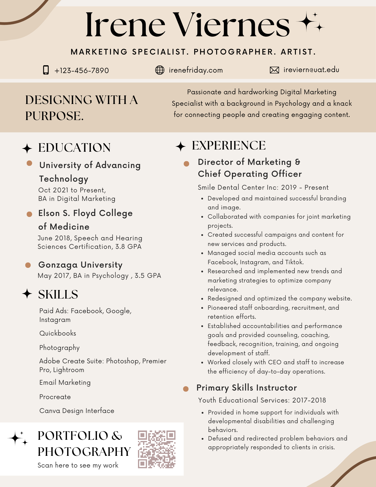

A small-town island girl with a knack for
connecting people and a passion for art and food.
About Me
I have a BA in Psychology and a Speech and Hearing Sciences certification. I am currently pursuing a Digital Marketing Degree while working full-time as Cheif Operating Officer at a local Dental Clinic in Oahu, HI.
I am a master of many trades, but my ultimate goal is to merge my psychological expertise with my technological skills and fondness for art and all things creative.
Resume
